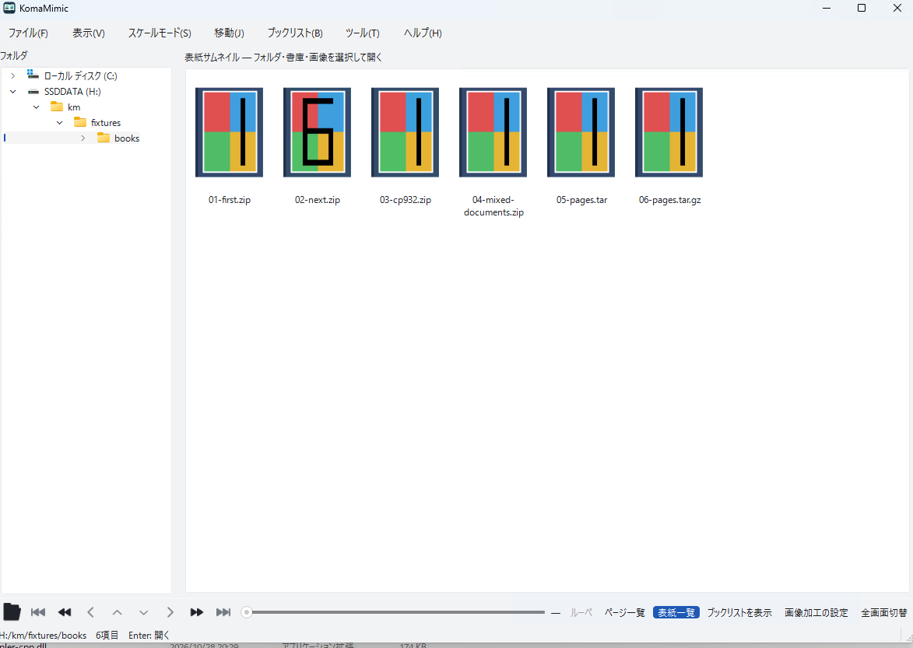
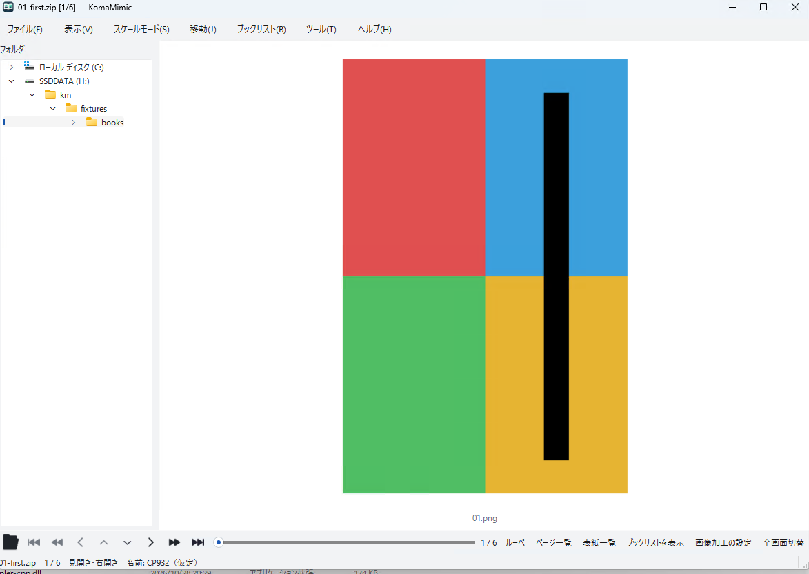

基本操作
日本語 | English
以下は新しい設定での操作です。変更済みの設定があれば保存した割当を優先します。 macOSは操作の違いも参照してください。
本やフォルダを開く
Ctrl+O で画像・書庫・PDF・文書を選び、Ctrl+Shift+O でフォルダを開きます。
ウィンドウへのドラッグ＆ドロップでも開けます。表紙一覧ではダブルクリック、
または矢印キーで選択して Return/Enter を押すと項目を開きます。
フォルダ内の画像を直接読む操作は Ctrl+Return です。

ページを移動する
| 操作 | 初期キー |
|---|---|
| 次／前の表示 | →／← |
| 見開きを1ページずらす | ↓／↑ |
| 先頭／最終 | Home／End |
| 次／前の書庫 | Shift+→／Shift+← |
| 表紙一覧／上のフォルダ | Shift+↓／Shift+↑ |
| ページサムネイル | Ctrl+E |
| フォルダツリー | Ctrl+T |
| 指定ページ | Ctrl+N |
| 全画面 | Windows/Linux: F11、macOS: Control+Command+F |
| 画面に合わせる／原寸 | X／C |
| 自動見開きの切替 | Space |
開く向きとページ送りキーは別の設定です。右開きでもキーの次／前は上の表に従います。 画像のSpaceは自動見開き、文書のSpaceは本別の単ページ／見開きを切り替えます。 一覧のReturnは選択の決定です。全画面と共用しません。
「次／前の書庫」（Shift+→／Shift+←）は、現在表示しているファイルを基準に、同じフォルダの単体画像・書庫・文書・動画を既存の並び順で移動します。例えば 01.jpg ⇄ 01.mkv ⇄ 02.jpg ⇄ 02.mkv と移動でき、画像を飛ばしません。アニメーション画像の表示モードを変更しても移動順は同じです。
読書モードの→／←は従来どおり、フォルダでは画像だけ、書庫では書庫内の画像を切り替えます。文書内の操作と動画内の短時間シークも変更しません。

マウス
画像の読書中は左クリックで次、右クリックで前へ進みます。ホイールは縦スクロールし、 端でページを送ります。右ボタンを押しながらホイールで拡大縮小します。 中ボタンはルーペ、中ボタンドラッグはパンです。 左／右ダブルクリックで順／逆の自動再生を開始し、同じ方向の操作で停止します。 大きな画像ではスクロールしてから次へ進みます。
表紙・ページサムネイルは、マウスを動かすとその下の項目を選択します。 「環境設定 → 表示 → マウス移動でサムネイルを選択する」で無効にできます。
操作を変更する
「ツール → 操作設定 → キーボード」（Ctrl+K）でキーを変更します。
共通・読書・サムネイル・ツリーの範囲を選び、検索で操作を絞れます。
マウス・ゲームパッド・下部バーも操作設定から変更できます。
環境設定はWindows/Linuxで Ctrl+Alt+,、macOSで Command+, です。
最後から先へ進むときの動作は「移動」メニューの非リピート・リピート・ フォルダ移動自動式で選びます。先頭から前へ戻る場合も逆方向に同じ規則です。